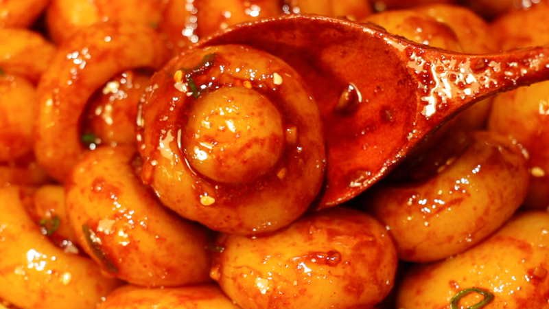

Potato Button Noodles

Description
Lucious and garlicky buttons of heaven! If you never tried making these, you definately should. Though the original recipe is Korean, the ingredients are as simple as it gets -- potatoes, starch, vegetable oil, garlic, spices to taste.
Once you understand how to make these, you can experiment with different vegetables, starches, cooking times and spices, but the basic principle will always be the same.
Ingredients
Potato dough
- Potatoes 440 gr
- Potato starch 200 gr
- Water 150 ml
- Salt 5 gr
Seasoning
- Minced garlic 2 medium cloves
- Korean chili powder 1 tbsp
- Sugar 1 tsp
- Soy sauce 4 tbsp
- Chopped green onion 1 tbsp
- Vegetable oil 3 tbsp
Steps
- Cut the potatoes into half-inch sized cubes
- Cook the potatoes in a microwave-safe bowl covered with plastic wrap for about 7 minutes, until soft
- Mash the potatoes, add the water and starch, then mix until uniform
- Shape the noodles by rolling a small ball and indenting it with a glass bottle
- Add the noodles to boiling water and cook on medium heat for 5 minutes (or longer if you want a softer mouthfeel)
- Strain the noodles into iced water (or just water for softer buttons)
- Remove the noodles into a serving bowl, throw on all of the ingredients for the seasoning except for the oil
- Heat the oil in a pan until really hot, pour it over the seasoning, then mix